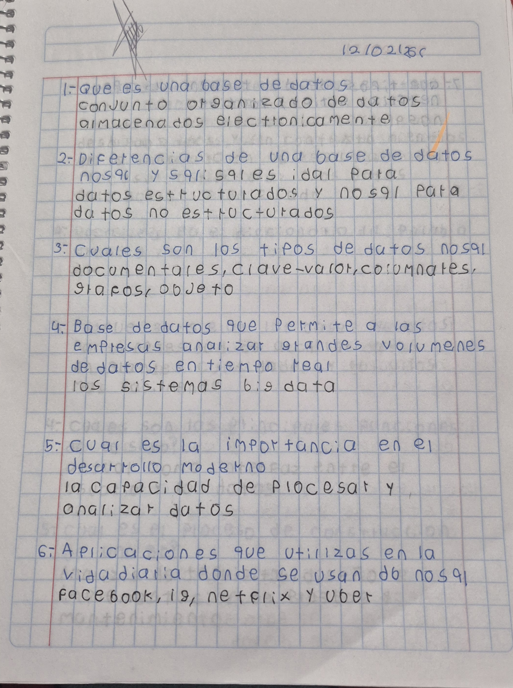
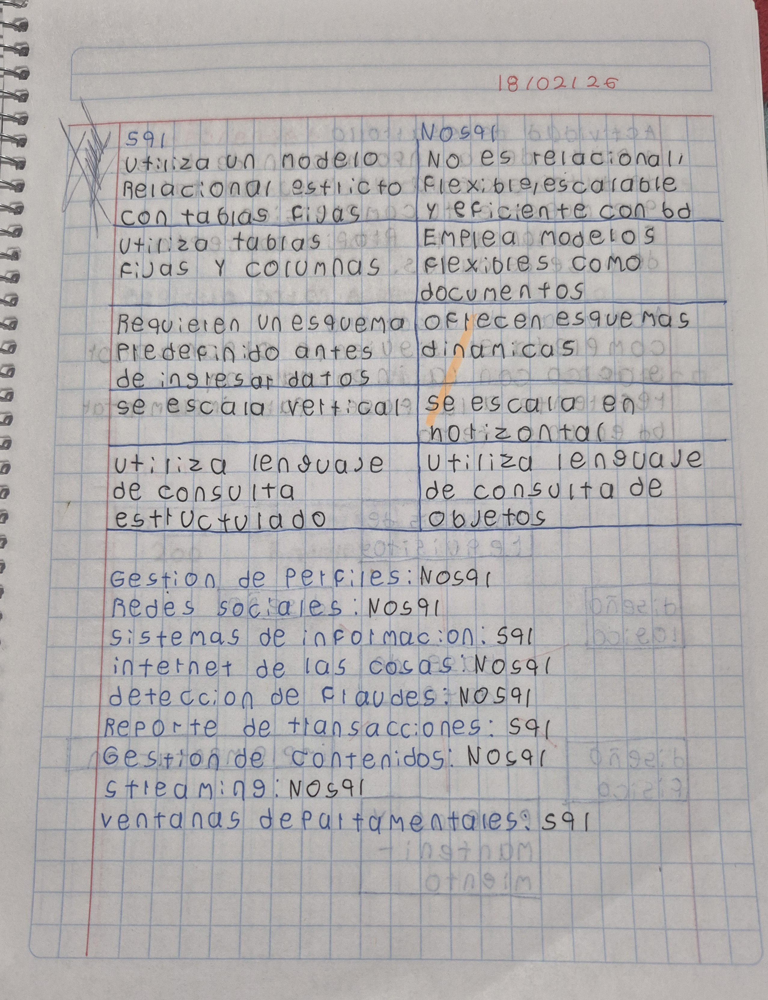
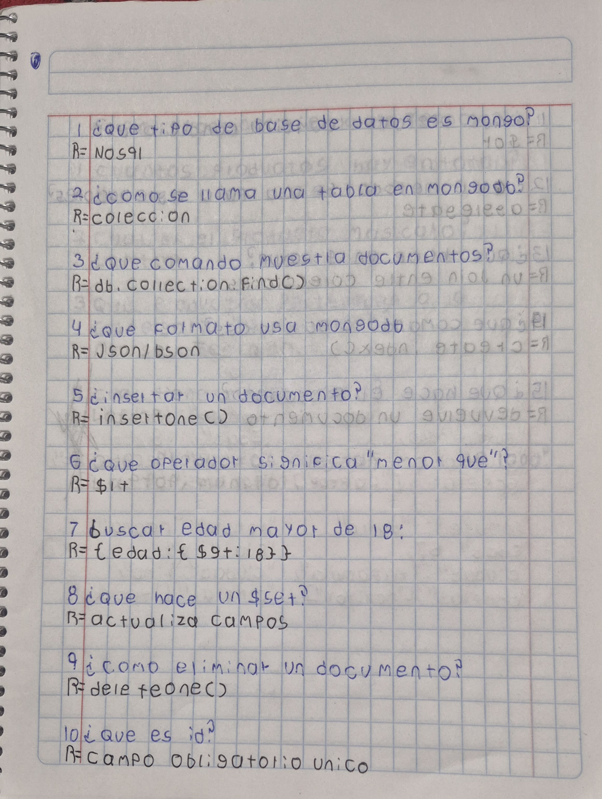
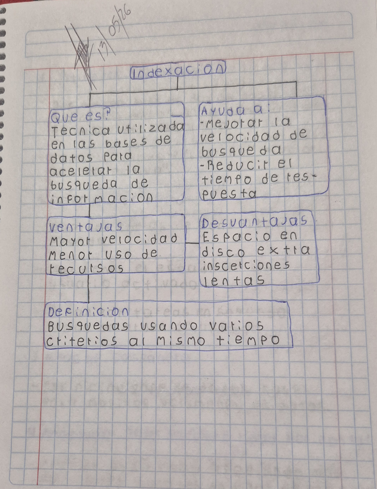
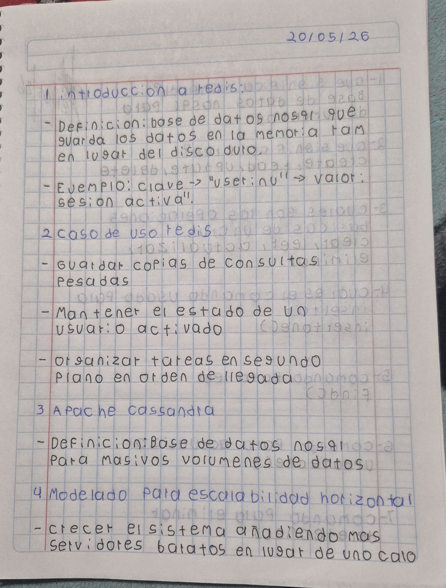
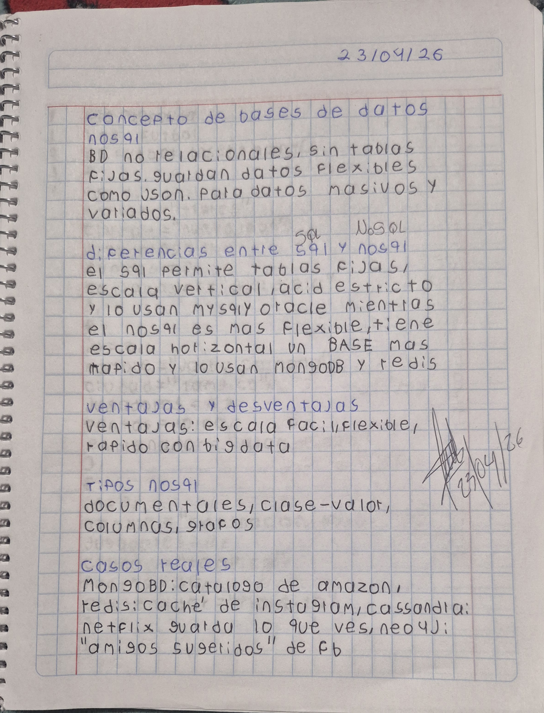
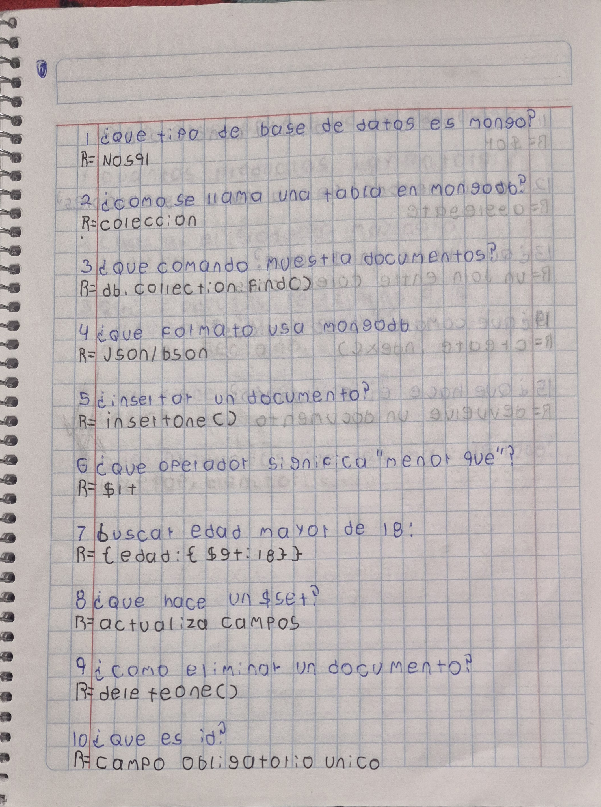
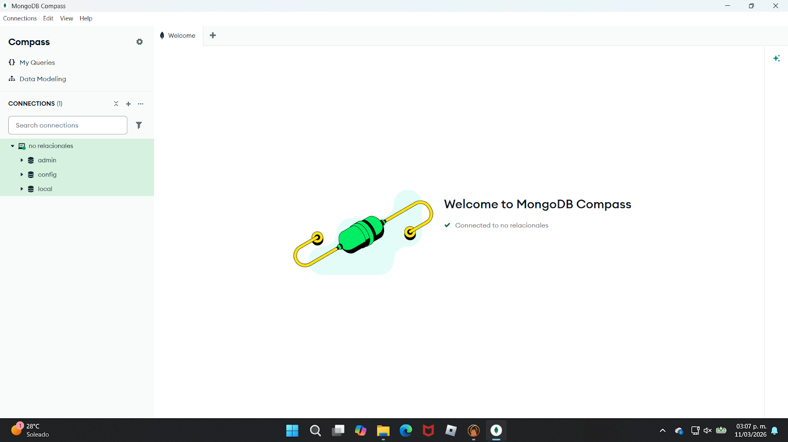

Introducción
Descripción breve del proyecto y el contexto de la base de datos no relacional.
MongoDB
Introducción a la base de datos no relacional MongoDB y su implementación en el proyecto.
Redis
Introducción a la base de datos en memoria Redis y su implementación en el proyecto.
Indexación
Conceptos clave sobre la indexación y su importancia en el rendimiento de consultas.
JSON y BSON
Explicación de los formatos de datos JSON y BSON y su uso en las bases de datos no relacionales.
Evidencias
Zona destinada a subir y documentar las evidencias de trabajo del proyecto.
Introducción
1. ¿Qué son las bases de datos No Relacionales?
Son sistemas de almacenamiento de información que no utilizan el modelo tradicional de tablas de filas y columnas (SQL). En su lugar, organizan los datos mediante estructuras flexibles como documentos (JSON), gráficos, clave-valor o columnas anchas.
En pocas palabras: Están diseñadas para manejar grandes volúmenes de datos abstractos, no estructurados o que cambian constantemente, sin la necesidad de un esquema rígido.
2. Importancia de las bases de datos NoSQL
Escalabilidad Horizontal: Permiten distribuir la carga de datos entre múltiples servidores de forma económica y eficiente, soportando millones de usuarios simultáneos.
Flexibilidad de Esquema: Los datos se pueden guardar sin definir una estructura previa, lo que acelera el desarrollo y permite adaptar la base de datos a cambios en tiempo real.
Alto Rendimiento: Al evitar operaciones complejas de unión (joins), ofrecen una velocidad de lectura y escritura excepcionalmente alta para aplicaciones web y móviles.
3. Diferencias de NoSQL y SQL
Modelo de Datos: SQL utiliza un modelo relacional basado en tablas, mientras que NoSQL emplea modelos flexibles como documentos, clave-valor, gráficos o columnas anchas.
Esquema: SQL requiere un esquema definido antes de almacenar datos, mientras que NoSQL permite un esquema dinámico o sin esquema, facilitando la adaptación a cambios en los datos.
Escalabilidad: SQL generalmente escala verticalmente (mejorando el hardware), mientras que NoSQL está diseñado para escalar horizontalmente (agregando más servidores).
4. Objetivo del Portafolio Digital
El objetivo principal de este portafolio es recopilar, organizar y demostrar de manera práctica las competencias adquiridas en el manejo de tecnologías no relacionales.
Sirve como una evidencia estructurada de mi capacidad para diseñar, implementar y optimizar soluciones de almacenamiento modernas, reflejando el progreso técnico y los proyectos clave desarrollados a lo largo del curso.
MongoDB
1.¿Qué es MongoDB?
MongoDB es una base de datos NoSQL (no relacional), de código abierto y basada en documentos.
A diferencia de las bases de datos tradicionales (como MySQL o PostgreSQL) que guardan la información en tablas rígidas con filas y columnas, MongoDB guarda los datos en estructuras flexibles llamadas documentos BSON (que es esencialmente un formato JSON pero binario).
2. Características de MongoDB
Esquema flexible (Schema-less): No necesitas definir qué columnas va a tener tu base de datos antes de meter información. Un documento puede tener 3 campos y el siguiente puede tener 10 si lo necesitas.
Escalabilidad horizontal: Está pensada desde su origen para crecer. Si te quedas sin espacio o potencia, puedes distribuir los datos en varios servidores (un proceso llamado sharding) de forma muy natural.
Consultas potentes: Aunque no usa SQL, tiene su propio lenguaje de consultas muy intuitivo y potente que te permite filtrar, ordenar y agregar datos rápidamente.
3. ¿Cuándo se utiliza?
MongoDB es ideal para aplicaciones que requieren alta escalabilidad, flexibilidad en el esquema y un alto rendimiento en operaciones de lectura y escritura.
Es comúnmente utilizado en aplicaciones web modernas, sistemas de gestión de contenido, análisis de big data y cualquier escenario donde los datos no estructurados o semi-estructurados sean predominantes.
Redis
1.¿Qué es Redis?
Redis es una base de datos en memoria de código abierto que almacena datos en estructuras de datos como cadenas, hashes, listas, conjuntos y conjuntos ordenados.
2. Características de Redis
Alto rendimiento: Redis es extremadamente rápido porque almacena los datos en memoria RAM.
Flexibilidad: Soporta múltiples tipos de datos y operaciones complejas.
Persistencia: Aunque los datos se almacenan en memoria, Redis ofrece opciones de persistencia para evitar la pérdida de información.
3. ¿Cuándo se utiliza?
Redis es ideal para aplicaciones que requieren un acceso muy rápido a los datos, como cachés, sesiones de usuario, colas de mensajes y sistemas de puntuación en tiempo real.
4. Comparación con MongoDB
La principal diferencia entre Redis y MongoDB radica en su forma de almacenamiento: Redis almacena los datos en memoria RAM, lo que lo hace extremadamente rápido, mientras que MongoDB almacena los datos en disco, lo que ofrece mayor capacidad de almacenamiento y persistencia.
En términos de casos de uso, Redis es ideal para aplicaciones que requieren un acceso muy rápido a los datos, como cachés, sesiones de usuario, colas de mensajes y sistemas de puntuación en tiempo real. Por otro lado, MongoDB es más adecuado para aplicaciones que necesitan una base de datos flexible y escalable para manejar grandes volúmenes de datos no estructurados o semi-estructurados.
Indexación
1. ¿Qué es la indexación?
La indexación es una técnica que mejora el rendimiento de las consultas al permitir búsquedas más rápidas dentro de una base de datos.
2. Beneficios
Reduce el tiempo de lectura, acelera la recuperación de datos y mejora el rendimiento general en consultas grandes o complejas.
3. Cómo se usa
En bases de datos NoSQL, los índices se aplican a campos específicos para optimizar filtros, ordenamientos y combinaciones de datos.
JSON y BSON
1. ¿Qué es JSON?
JSON (JavaScript Object Notation) es un formato de texto ligero para el intercambio de datos. Es fácil de leer y escribir para los humanos, y fácil de analizar y generar para las máquinas. JSON se utiliza comúnmente para transmitir datos en aplicaciones web entre un servidor y un cliente.
2. ¿Qué es BSON?
BSON (Binary JSON) es un formato de datos binario que se utiliza principalmente en MongoDB. Es una extensión de JSON que incluye tipos de datos adicionales, como fechas y binarios, y está diseñado para ser eficiente en términos de espacio y velocidad de análisis.
3. Diferencias entre JSON y BSON
Formato: JSON es un formato de texto, mientras que BSON es un formato binario.
Tipos de datos: BSON incluye tipos de datos adicionales que no están presentes en JSON, como fechas y binarios.
Uso: JSON se utiliza ampliamente para el intercambio de datos en aplicaciones web, mientras que BSON se utiliza principalmente en MongoDB para almacenar y transmitir datos de manera eficiente.
Evidencias de trabajo









